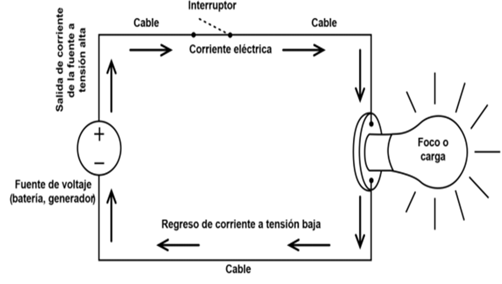
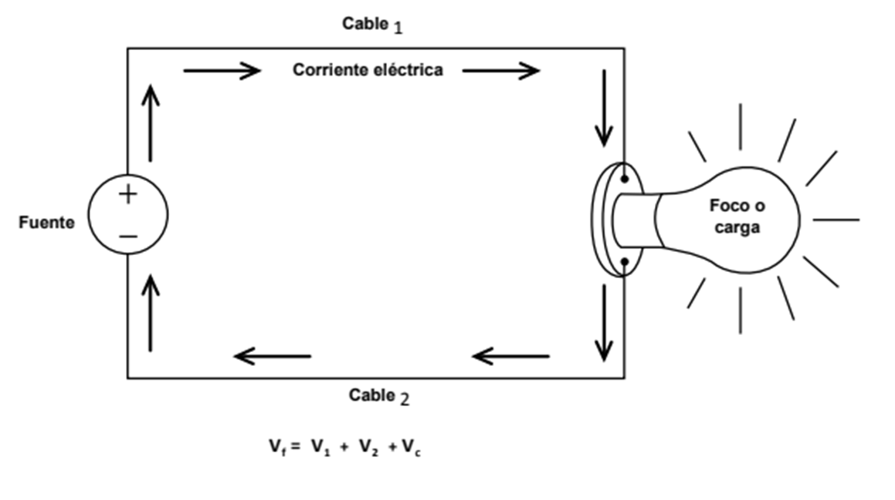
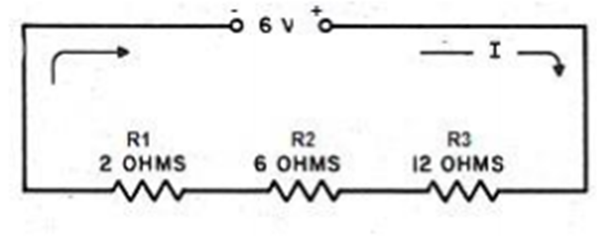
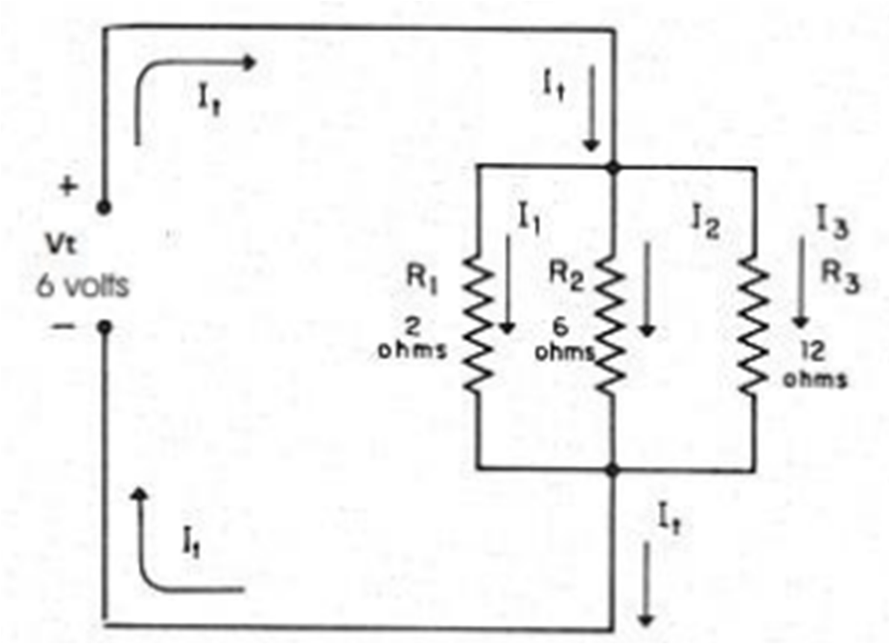

La corriente eléctrica (movimiento de cargas eléctricas) se transmite de un lugar a otro a través de cables
eléctricos. Los cables eléctricos tienen un conductor metálico (generalmente de cobre o aluminio), que es el que
transporta la corriente eléctrica. La cantidad de corriente transmitida está relacionada con el área transversal
del metal conductor: a mayor área, mayor corriente eléctrica transmitida. El aislamiento del cable tiene la función
de evitar que la corriente eléctrica se salga del conductor metálico. El espesor de aislamiento está relacionado
con la tensión eléctrica que soporta el cable: a mayor espesor de aislamiento, el cable soporta mayor tensión
eléctrica. Las unidades que se emplean para medir la corriente eléctrica son carga eléctrica entre tiempo
[coulombs por segundo (C/s), a lo que se le llama ampere].
Cable eléctrico
Para que la corriente eléctrica se transmita de un lugar a otro, se requiere que exista una diferencia de tensión o
voltaje entre los dos lugares y que estén unidos mediante un cable. Las unidades que se emplean para medir la
tensión eléctrica son los volts.
Partes de un circuito eléctrico
La fuente generadora de tensión o electricidad. Ésta puede ser un generador una batería, la salida de un
transformador o la alimentación de la compañía suministradora de electricidad, la Comisión Federal de
Electricidad.
El medio de transmisión de electricidad, que son los cables.
La carga, que es donde se utiliza la electricidad; puede ser un motor. un foco, una lavadora, una televisión,
una computadora, etc.
El medio de desconexión de la electricidad, que se conoce como interruptor.

Segunda Ley o Ley de Conservación de la Tensión
En cualquier circuito cerrado, la suma de las tensiones eléctricas de los elementos pasivos de un circuito, como
son los conductores y las cargas, es igual a la tensión eléctrica del elemento activo o fuente.

Donde:
Vf = Tensión de la fuente
V1 = Tensión de cable 1
Vc = Tensión de la carga o foco
V2 = Tensión del cable 2
En corriente directa, la tensión de un cable o una carga está dada por la Ley de Ohm, que se explicó con
anterioridad y la cual se expresa en la siguiente fórmula:
V = R X I
Donde:
V = Tensión del cable o carga en volts [V]
R = Resistencia eléctrica del cable o carga en ohms [Ω]
I = Corriente eléctrica que pasa por el cable o carga en amperes [A]
Calculo de voltajes y corrientes en los circuitos.
Circuitos en serie
Se le llama circuito en serie a un circuito como el de la figura, en el cual la corriente que pasa por todas las
resistencias es la misma, debido a la Primera Ley de Kirchoff. A continuación, vamos a calcular la corriente y
las tensiones de cada una de las resistencias de la figura:
•Por la Segunda Ley de Kirchoff, tenemos que la suma de las tensiones de cada resistencia debe ser igual a la
tensión de la fuente; y por la Ley de Ohm, la tensión de cada resistencia es igual a la corriente que pasa por ella,
multiplicada por su resistencia:

R1, R2 y R3 = Resistencias.
I = Corriente.
V = Tensión de la fuente.
Circuitos en paralelo
Se le llama circuito en paralelo a un circuito como el de la figura, en el cual la tensión de cada resistencia es la
misma, debido a la Segunda Ley de Kirchoff. A continuación, vamos a determinar la tensión y la corriente en cada
una de las resistencias.
Por la Segunda Ley de Kirchoff, tenemos que la tensión de cada resistencia debe ser igual a la tensión de la fuente; y por la Ley de Ohm, la corriente que pasa por cada resistencia es igual a su tensión dividida entre su resistencia.

R1, R2 y R3 = Resistencias.
I1, I2, I3 = Corrientes de las resistencias 1, 2 y 3
It = Corriente total.
Vf = Tensión de la fuente.